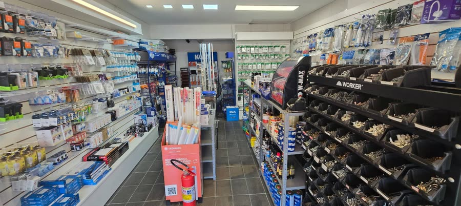

Material elétrico comprado fora de hora vira dinheiro parado ou obra parada. A conta que interessa não é o preço unitário: é quantas vezes o pedreiro desceu do andaime para buscar uma luva de 25 mm.
Fase 1 — Infraestrutura (antes da laje e do contrapiso)
É o material que fica enterrado. Errar aqui custa quebra-quebra depois.
- Eletroduto corrugado reforçado, na bitola do projeto
- Eletroduto rígido PVC ou galvanizado para trechos aparentes e passagens sob tráfego
- Caixas de passagem de piso e de parede
- Curvas, luvas e buchas na mesma bitola dos eletrodutos
- Fita isolante e fita crepe para vedar bocas antes da concretagem
- Arame guia (fio-guia) já dentro dos dutos — depois de concretado não entra mais
- Abraçadeiras de nylon e fita de amarração
Fase 2 — Alvenaria e rasgos
- Caixas 4×2 (tomadas e interruptores) e 4×4 (pontos duplos e quadros pequenos)
- Caixas octogonais para pontos de teto
- Conduletes para instalação aparente
- Curvas 90° e 45°, luvas de emenda
- Bucha e parafuso para fixar caixa em drywall
- Espuma expansiva ou argamassa para chumbar
Fase 3 — Enfiação
Aqui entra o cabo. Compre por circuito, não "por rolo" — e respeite o código de cores da NBR 5410, que é o que permite alguém entender a instalação daqui a dez anos:
- Neutro — azul-claro, exclusivamente
- Proteção (terra) — verde ou verde-amarelo, exclusivamente
- Fase — qualquer outra cor; na prática preto, vermelho e branco
- Retorno — cor distinta das fases, para não confundir na manutenção
Complementos que a enfiação sempre pede:
- Fita passa-fio (guia de aço ou nylon)
- Lubrificante de cabo ou talco industrial nas puxadas longas
- Conectores de emenda, terminais e luvas de compressão
- Fita isolante de boa qualidade e fita de autofusão para emenda em área úmida
- Etiquetas ou anilhas de identificação de circuito
Fase 4 — Quadro de distribuição
- Quadro dimensionado com folga mínima de 30 % em módulos DIN para ampliação
- Disjuntores por circuito, na curva correta (B para resistivo, C para motor)
- DR de 30 mA nos circuitos de áreas molhadas
- DPS na origem, com condutor de aterramento curto e direto
- Barramentos de neutro e de terra, separados e identificados
- Espelho, porta e etiqueta de identificação de cada disjuntor
O quadro é o cartão de visitas do serviço. Cabo cortado no comprimento certo, curva com raio decente e circuito identificado é o que diferencia instalação profissional de gambiarra cara.
Fase 5 — Acabamento
Só depois da pintura. Comprar acabamento antes é convite a arranhão e respingo de tinta.
- Tomadas 10 A e 20 A conforme o uso de cada ponto
- Interruptores simples, paralelos e intermediários
- Espelhos e placas, todos da mesma linha e cor
- Plafons, spots, fitas e perfis de alumínio
- Lâmpadas na temperatura de cor definida no projeto
- Tomadas USB e pontos de rede onde o projeto previu
Fase 6 — Antes de entregar
- Teste do botão de teste do DR — mensal, e obrigatoriamente na entrega
- Continuidade do condutor de proteção em todos os pontos
- Medição de resistência de isolamento antes de energizar
- Identificação final do quadro, com o mapa de circuitos colado na porta
- Registro fotográfico das paredes antes do reboco — vale ouro em manutenção futura
Os cinco itens que sempre faltam
- Fita isolante
- Bucha e parafuso
- Abraçadeira de nylon
- Luva e curva na bitola certa
- Lâmpada de reposição para o ponto que queimou no teste
Não é falta de planejamento: é consumo real de obra. Comprar esses cinco com folga custa pouco e economiza a viagem que trava a equipe inteira.